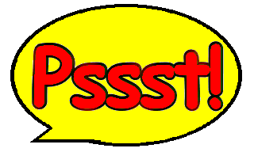

|  | Trainspotters Throughout History |
|
Number Eight - James Bond
(Voice comes carefully from behind copy of The Times as he sits at the agreed café table) "Do you have a light?" (We make the correct response) "Giraffes are harder to track by night." (We nod and he puts the paper down) "Yes, it's true, I've always liked Speccies. Call me old-fashioned, call me traditional, call me a bit of a stickler, but they've always held a special place in my heart, right next to my PPK. "I'll never forget the time I was in Russia, trapped in a cell slowly filling with water and with my arms chained to the wall. The rising water rusted the chains so I was able to break free, and then I used the Speccy in my back pocket to beat the door down. "Or the time I was in France, playing Manic Miner in my hotel room when two heavies burst in and tried to seize me. I threw the red-hot power pack at one, causing third-degree burns on his face and upper torso; needless to say, he was out of the picture. I managed to fend the other one off long enough to start the Speccy loading again; the sonic distortions wrecked havoc with his untrained ears, and he threw himself out of my hotel window, crying for mercy. As I was on the ground floor, it's just as well he was hit by a BBC van coming the other way. "Yes sir, that Speccy is the dearest thing to me, more trustworthy than a partner and more fun than any of the women I've met. I only sleep with them when we can't play Chaos. Didn't think much of the Bond games, though, apart from Licence to Kill and The Spy Who Loved Me... but when you drive like that anyway the point of a game is rendered pretty moot. I - " (suddenly spies something over his shoulder) "Excuse me, I do believe we have company." (In a flash he grabs a bloke in sunglasses behind him, throws him into the table and uses his newspaper to give him a nasty slice in his wrists.) "Looks like he got his cut. Well, I think this is my cue to go. Take care now and don't be a stranger." (With a wink and a smile he's off, blending into the crowd. We dial 999 and apply pressure to the spurting blood on the other man's wrists. Nice one-liner, though. Makes up for the senseless violence.) |
 |
| Back to Pssst! |